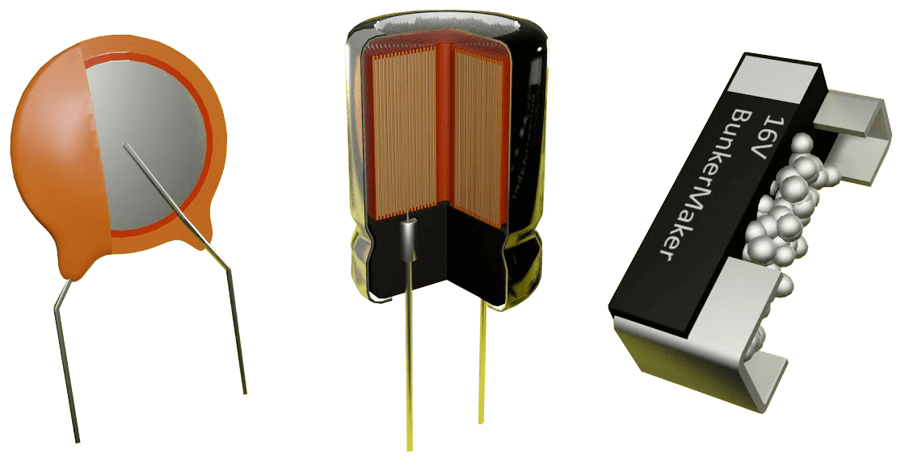
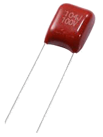
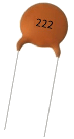
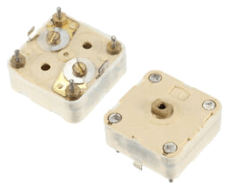
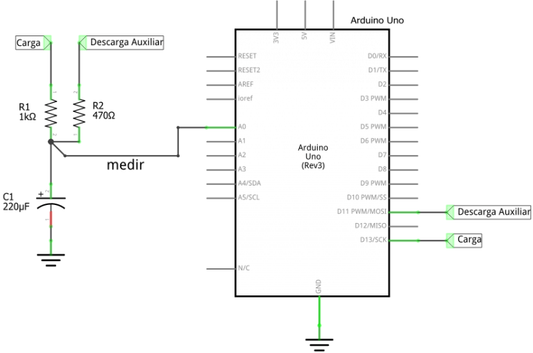
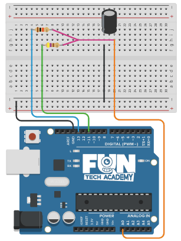

En este tema conoceremos el funcionamiento de un condensador y su simbología.
(1) x Placa Arduino
(1) x Protoboard
(1) x Condensador de 100 μF
(1) x Resistencia de 1 kOhm
(1) x Resistencia de 470 Ohm
(x) x M M cables (cables de macho a macho)
Un condensador, (también llamado capacitor) es un dispositivo capaz de almacenar energía en forma de campo eléctrico.
Los condensadores están constituidos internamente por dos superficies conductoras llamadas armaduras. Estas superficies se encuentran normalmente en forma de láminas o placas y están separadas por un dieléctrico o material no conductor que aísla una armadura de otra (se puede dejar un hueco entre las armaduras y usar el aire como dieléctrico).

Los condensadores están caracterizados fundamentalmente por dos parámetros, capacidad y la tensión de trabajo.
- Capacidad: La capacidad de un condensador, es directamente proporcional a la carga
eléctrica que este puede almacenar e inversamente proporcional al voltaje entre las armaduras del
mismo. La capacidad se mide en Faradios (F), aunque por ser una unidad muy grande y se suelen usar
submúltiplos.
- Tensión de Trabajo: La tensión de trabajo es la máxima tensión que podemos aplicar
entre los extremos del condensador. Es MUY RECOMENDABLE no exceder esta tensión, si
lo hacemos puede saltar un arco eléctrico entre las armaduras del condensador que perfore el
dieléctrico y dañar el condensador.
Otra característica muy importante, aunque no es común a todos los condensadores, es la polaridad. Existen
condensadores electrolíticos o polarizados, en los cuales tendremos que tener en cuenta su polaridad, esto es
MUY IMPORTANTE, ya que si colocamos uno de estos condenadores con la polaridad invertida
pueden llegar a explotar.
Nota: Como hemos advertido ya, ojo con la polaridad de los condensadores, que pueden llegar a explotar si no se conectan correctamente.
Al igual que ocurre con las resistencias, los condensadores pueden ser clasificados de muy diversas formas. Haremos una tipificación atendiendo en primer lugar a si son fijos o variables y en segundo lugar al material con el que están construidos sus dieléctricos:
Son los condensadores más comunes que podemos encontrar, el valor de su capacidad está fijado por el
fabricante y no puede ser modificado. Pueden ser:
- Condensadores electrolíticos: Los condensadores electrolíticos tienen el dieléctrico
formado por una lamina de papel impregnado en electrolito (liquido iónico). Estos condensadores
suelen tener mayor capacidad por unidad de volumen que otros condensadores, normalmente se encuentran
con capacidades superiores a 1µF. Estos condensadores poseen polaridad, por lo que hay que tener
cuidado en su colocación. Normalmente se emplean en circuitos eléctricos de grandes corrientes o en
fuentes de alimentación para el filtrado y estabilización de tensiones.
- Condensadores electrolíticos de Tántalo: Este tipo de condensadores tienen las mismas características que los anteriores, con la diferencia que como electrolito usan oxido de tantalio, con el que se pueden crear láminas más finas y con un mayor poder aislante. Se suelen usar como filtros en fuentes de alimentación.
- Condensadores de poliéster: Los condensadores de poliéster suelen tener capacidades inferiores a 1µF y presentar tensiones de trabajo más elevadas que los condensadores electrolíticos.

Dentro de este tipo de condensadores podemos encontrarnos dos variedades:
* Metalizado: Los condensadores de poliéster metalizado están constituidos por
dos laminas de policarbonato recubiertos por un deposito metálico que se bobinan juntas y que
normalmente se presentan en forma plana o aplastada.
* Tubular: Los condensadores de poliéster tubular son similares a los anteriores,
pero estos están arrollados formando cilindros.
- Condensadores cerámicos: Este tipo de condensadores utiliza cerámica para formar el
dieléctrico. De todos los condensadores son los que presentan valores de capacidad más bajos, siendo
inferiores a 12 pF. Estos condensadores son llamados comúnmente "condensadores de lenteja" y se
suelen utilizar como filtro de altas frecuencias.

Un condensador variable es aquel que puede modificar su capacidad por medios mecánicos o electrónicos.
- De ajuste mecánico: Los condensadores variables de ajuste mecánico suelen ser
llamados trimmers, estos cambian su capacidad alterando la superficie de armadura que penetra en
interior del condensador ó variando la distancia entre las armaduras.
- De ajuste electrónico: Para el ajuste de la capacidad de manera electrónica existe un elemento llamado varactor o diodo varicap, este elemento es una mezcla entre un diodo y un condensador, el varactor tendrá una capacidad variable que dependerá de la tensión aplicada entre sus terminales. Estos dispositivos suelen ser utilizados como filtros, amplificadores paramétricos, sintetizadores de frecuencias, etc.

Los condensadores, al igual que las resistencias, los podemos conectar tanto en serie como en paralelo. Con la asociación de condensadores en serie o en paralelo, podemos crear efectos totalmente diferente de los que podemos valernos a la hora de diseñar nuestros circuitos.
Cuando asociamos condensadores en serie (o en fila), la tensión resultante entre sus extremos será la suma de las tensiones de cada uno de los condensadores por separado, sin embargo, la capacidad equivalente de esta asociación será igual a la inversa de las suma de las inversas de las capacidades de cada uno de los condensadores por separado, por lo que la capacidad equivalente del conjunto será siempre menor que la capacidad de los condensadores por separado.
Cuando asociamos condensadores en paralelo lo hacemos conectando las patillas de un lado y de otro de todos los condensadores a un mismo punto, por este motivo la tensión VAB entre los extremos de los condensadores siempre será la misma. La capacidad en la asociación en paralelo, será acumulativa, es decir la capacidad equivalente será igual a la suma de las capacidades de cada uno de los condensadores por separado.



Una vez efectuado todo el cableado, descargaremos el script del siguiente
enlace y lo cargaremos como hemos
aprendido.
En el ejemplo podemos observar la curva de carga y descarga del condensador.
Usamos como sensor un puerto analógico/digital para medir el voltaje del condensador y el tiempo
transcurrido desde el inicio del proceso de carga o descarga.
El sensor nos da las mediciones del voltaje del condensador como valores discretos en el rango [0, 1024],
que son los valores discretos para el rango de voltajes [0, 5] en +V.
El dispositivo de medición nos da el tiempo transcurrido en microsegundos (μs) desde el inicio de evento de
carga o descarga.
Las mediciones de los voltajes del condensador se realizan en el pin A0, que está en el bloque de entradas
analógicas. El control de la carga se realiza con el pin 13 que pasa de estado alto +5V a estado bajo 0V,
mientras que para la descarga se habilita el pin 11 para descarga más rápida con la resistencia R2.
En el estado de carga el pin 11 pasa a un estado de alta impedancia, por lo que no afecta al circuito en
general.
En el estado de alta impedancia, la salida se comporta como si aún no estuviera conectada al circuito, excepto por una pequeña corriente de fuga que puede fluir hacia adentro o hacia afuera del terminal de salida
Ahora pondermos un LED al circuito para aprovechar la energía descargada del condensador para encenderlo.
Volver al índice